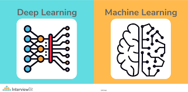
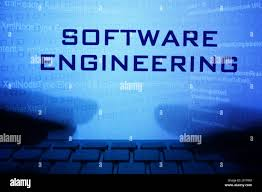

Programming Languages
Python 🐍 – The leading language for AI/ML with libraries like NumPy, Pandas, TensorFlow, PyTorch, and Scikit-learn.
Aspiring AI/ML Developer passionate about machine learning, data science, and automation, building intelligent systems that improve lives and transform industries.
Python 🐍 – The leading language for AI/ML with libraries like NumPy, Pandas, TensorFlow, PyTorch, and Scikit-learn.
Linear Algebra, Calculus, Probability, and Optimization — core foundations of AI and ML algorithms.

Hands-on experience with TensorFlow, PyTorch, Keras, Scikit-learn, and XGBoost frameworks for supervised and unsupervised learning.
Expertise in Pandas, NumPy, Matplotlib, Seaborn, SQL, MongoDB, and Big Data tools like Apache Spark and Hadoop.

Git/GitHub, REST APIs, FastAPI, Flask, Docker, Kubernetes, and cloud deployment on AWS, Azure, and Google Cloud.

Problem-solving, collaboration, continuous learning, and effective communication in cross-functional teams.
Introduction: This project showcases an NLP-driven sentiment analysis tool that classifies text data into positive, neutral, or negative sentiments using AI models.
Objective: To demonstrate full-cycle AI development — from data preprocessing to model evaluation and visualization.
Tools & Tech: Python, Pandas, Scikit-learn, Matplotlib, Plotly, NLTK, Jupyter Notebook.
Relevance: Demonstrates AI-driven data insight generation, ideal for analytics and business intelligence domains.
Introduction: This artifact demonstrates my early development in applying core Machine Learning concepts, and I created this reflection specifically for academic reviewers, potential employers, and anyone interested in my growth as an AI/ML practitioner. My goal in this project was not just to complete the assignment, but to understand how real-world machine learning pipelines work—from data preparation to model evaluation.
Objective: Throughout this artifact, I learned how critical it is to properly clean data, select meaningful features, and evaluate models using metrics such as accuracy, precision, recall, and confusion matrices. Before completing this project, I tended to focus heavily on model training, but this experience taught me that the quality of preprocessing and evaluation is what truly determines model value. I realized that even a simple model like Logistic Regression or a Decision Tree can produce strong results when built on clean, structured, well-explored data.
Tools & Tech: Python, Pandas, Scikit-learn, Matplotlib, Plotly, NLTK, Jupyter Notebook.
Relevance: Demonstrates AI-driven data insight generation, ideal for analytics and business intelligence domains.
Artifact 4 Reflection: For my fourth artifact, I selected a recent assignment that demonstrates my growing proficiency in AI and machine learning while showcasing my ability to analyze real-world applications and communicate complex concepts clearly. I refined the original work by improving its structure, adding context, and clarifying key technical principles so it could better suit a professional portfolio. This artifact highlights my strengths in problem-solving, model interpretation, and critical evaluation of AI/ML solutions. By including it, I broaden the scope of my showcased competencies and present a more complete picture of my readiness to contribute effectively in AI/ML environments.
Artifact 5 Reflection: For my fifth artifact, I selected an assignment that extends my learning into practical machine learning development and predictive modeling. I refined this piece by reorganizing the workflow, strengthening the explanations of each modeling step, and clearly illustrating how data preprocessing, algorithm selection, and evaluation metrics influence real-world results. These revisions were made so the artifact would better fit a professional portfolio and demonstrate not only the final outcome but also my reasoning throughout the process. This artifact highlights my growing competency in hands-on machine learning, particularly in building, comparing, and interpreting predictive models. It also reflects my ability to communicate technical work in a structured and accessible way—an essential skill for collaborating with teams and stakeholders in AI/ML environments. By including this artifact, I expand the range of evidence showing my readiness to apply machine learning techniques to real-world challenges and contribute meaningfully to data-driven projects.